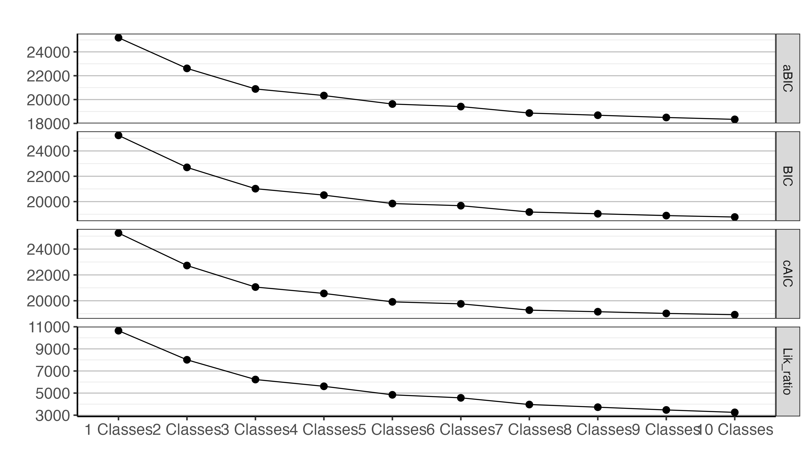
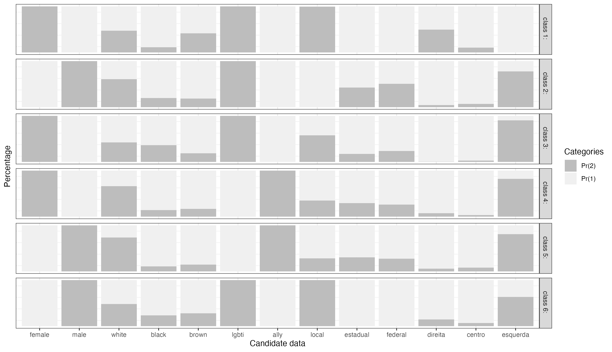
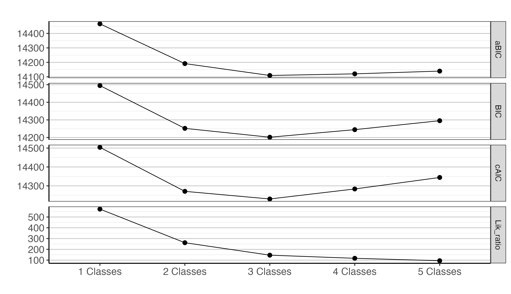
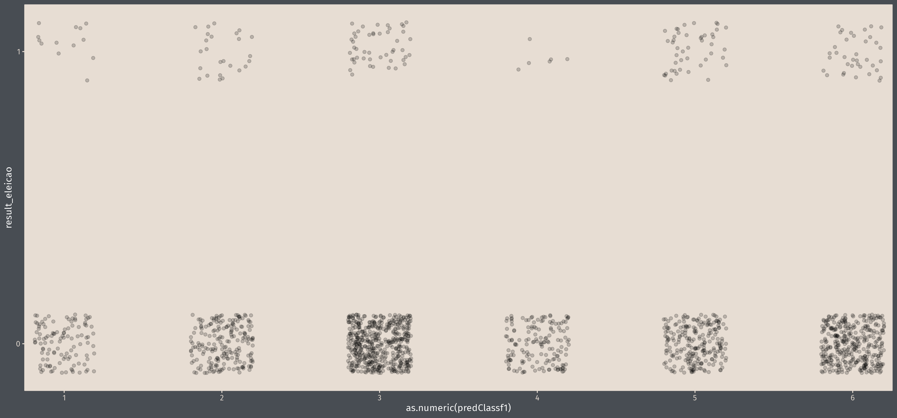
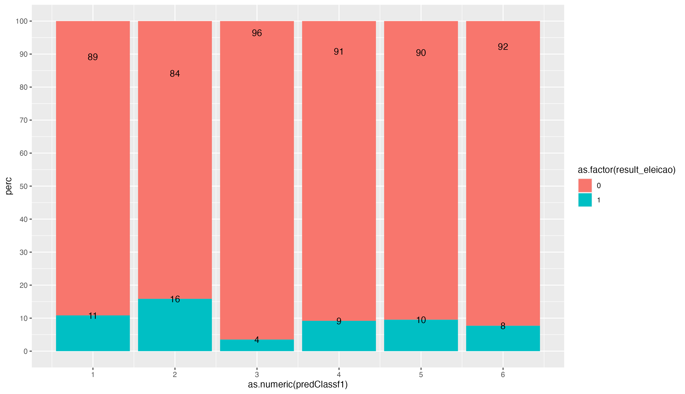
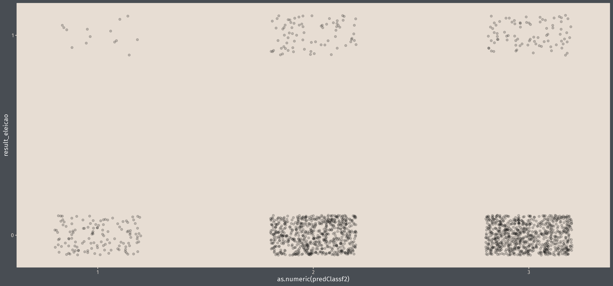
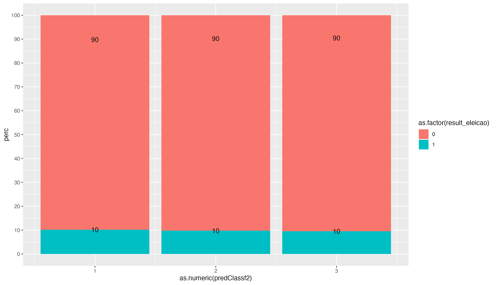

LGBT Politicians Brazil
Data manipulations
| varname | what | why |
|---|---|---|
doacao_campanha |
NA -> 0 | ca. 1000 NA’s here, if don’t set to 0, loose a lot of cases for analysis |
cor_raca |
Amarela (10), Indigena (13), NS/NR (1) -> Others | Groups are too small to compare, probably even with “other”-group exclusion for analysis; dummies built for black, white, and pardo |
id_gener |
Agenero (8) & Genero fluido (3) -> non-binary | probably have to take out because, 11 is too low; same for Homem Trans (18) |
cargo -> cargoLevel
|
Vice-Prefeito, Vereador, Prefeito -> local; Governador, Deputato estadual, Deputado Distrital -> estadual; Deputado federal, Senador -> federal | grouped by level to test differences; dummies built for local, estadual, federal |
orient_sexual |
there are unlabelled values 7, 8 & 9; in codebook the variable does not exist | - |
partido_ideologia |
- | dummies built for centro, direita e esquerda |
Descriptives
Continuous variables
| Variable | n_Obs | Mean | SD | Median | MAD | Min | Max | Skewness | Kurtosis | percentage_Missing |
|---|---|---|---|---|---|---|---|---|---|---|
| idade | 1772 | 38.38 | 11.18 | 37.00 | 11.86 | 18 | 80.00 | 0.65 | -0.01 | 0 |
| donations | 1772 | 0.38 | 5.67 | 1.00e-05 | 1.48e-05 | 0 | 204.61 | 29.00 | 977.74 | 0 |
| assets | 1772 | 1.49 | 5.22 | 0.01 | 0.01 | 0 | 131.80 | 13.31 | 272.05 | 0 |
Categorical Variables
The data contains 1772 observations (excluded NA’s with race and lgbti/aliado and sexo) of the following 6 variables:
gender: 6 entries, such as cis men (26.75%); cis women (22.29%); trans women (16.99%) and 3 others (549 missing)
sexo: 2 entries, such as masculino (51.75%); feminino (48.25%); NA (0 missing)
race: 4 entries, such as branco (54.12%); preto (22.52%); pardo (22.01%) and 1 other (0 missing)
sex: 2 entries, such as lgbti+ (61.75%); aliado (38.25%); NA (0 missing)
cargo_group: 3 levels, namely local (n = 1035, 58.41%), estadual (n = 333, 18.79%), federal (n = 346, 19.53%) and missing (n = 58, 3.27%)
partido_ideologia: 4 levels, namely indefinado (n = 239, 13.49%), centro (n = 85, 4.80%), direita (n = 167, 9.42%) and esquerda (n = 1281, 72.29%)
regiao: 5 entries, such as Sudeste (43.91%); Nordeste (20.94%); Sul (20.60%) and 2 others (0 missing)
There are a lot of missings in gender and race.
Latent Class Analysis
Single Variable Version
As a first step, I tried to figure out if there are latent classes in the data. In a second step, I will bind this to the outcome of elected or not (bias-adjusted 3-steps LCA). I just picked out variables that I thought are meaningful for possible classes, this can for sure be adjusted.
| Model | log-likelihood | resid. df | BIC | aBIC | cAIC | likelihood-ratio | entropy |
|---|---|---|---|---|---|---|---|
| 1 Classes | 1759 | -12566.07 | 25229.39 | 10645.71 | 25188.09 | 25242.39 | |
| 2 Classes | 1745 | -11249.46 | 22700.88 | 8012.49 | 22615.11 | 22727.88 | 1.00 |
| 3 Classes | 1731 | -10356.48 | 21019.63 | 6226.51 | 20889.38 | 21060.63 | 1.00 |
| 4 Classes | 1717 | -10050.15 | 20511.69 | 5613.86 | 20336.96 | 20566.69 | 1.00 |
| 5 Classes | 1703 | -9664.64 | 19845.39 | 4842.84 | 19626.19 | 19914.39 | 1.00 |
| 6 Classes | 1689 | -9528.01 | 19676.84 | 4569.57 | 19413.16 | 19759.84 | 1.00 |
| 7 Classes | 1675 | -9225.29 | 19176.13 | 3964.15 | 18867.97 | 19273.13 | 1.00 |
| 8 Classes | 1661 | -9104.54 | 19039.34 | 3722.63 | 18686.70 | 19150.34 | 1.00 |
| 9 Classes | 1647 | -8979.91 | 18894.80 | 3473.38 | 18497.68 | 19019.80 | 1.00 |
| 10 Classes | 1633 | -8870.90 | 18781.51 | 3255.37 | 18339.92 | 18920.51 | 1.00 |

We can see that from 6 groups on the measures only slightly drop, therefore I’ll stick to 6 latent groups (aim is to be parsimonious too).
The following graph shows the results of the 6 latent classes. Pr(2) indicates that the prospective attitudes is true/yes, and Pr(1) indicates, therefore, false/no.

Characteristics of latent classes
- Class 1: female, slightly more white, only lgbti, only local, slightly more direita
- Class 2: male, overwhelmingly white, only lgbti, estadual ou federal, esquerda
- Class 3: female, slightly higher white, only lgbti, slightly more local, overwhelmingly esquerda
- Class 4: female, overwhelmingly white, only ally, no preference level, overwhelmingly esquerda
- Class 5: male, overwhelmingly white, only ally, no preference level, overwhelmingly esquerda
- Class 6: male, slightly more white, only lgbti, only local, overwhelmingly esquerda
What we can see from this, that politically non-leftwing candidates don’t play a large role in the data set (it is only 36% of cases that are not left-wing). Interestingly, we see that the level plays a role and also being ally/lgbti. Furthermore, most groups are overwhelmingly white, however class 1, 3, 4 are rather mixed (22% of sample are pardo or black, 54 % are white).
Predictions for the different classes to the dataset are the following:
| Class | n | % |
|---|---|---|
| Class 1 | 231 | 13.04% |
| Class 2 | 564 | 31.83% |
| Class 3 | 162 | 9.14% |
| Class 4 | 124 | 7.00% |
| Class 5 | 284 | 16.03% |
| Class 6 | 407 | 22.97% |
Grouped Variable Version
In this LCA, I used the categorical data and didn’t dichotomize the data. After 3 classes, all global fit values increase again, signifiying a worse fit. Therefore, 3 classes seem sufficient.
| Model | df | log_lik | BIC | Lik_ratio | aBIC | cAIC | Entropia | LowestClass |
|---|---|---|---|---|---|---|---|---|
| 1 Classes | 134 | -7213.76 | 14494.83 | 573.24 | 14466.24 | 14503.83 | 100.00 | |
| 2 Classes | 124 | -7054.91 | 14251.93 | 261.51 | 14191.57 | 14270.93 | 0.58 | 38.38 |
| 3 Classes | 114 | -6992.34 | 14201.60 | 145.95 | 14109.47 | 14230.60 | 0.56 | 11.72 |
| 4 Classes | 104 | -6976.41 | 14244.54 | 116.96 | 14120.64 | 14283.54 | 0.59 | 17.76 |
| 5 Classes | 94 | -6964.41 | 14295.34 | 94.51 | 14139.67 | 14344.34 | 0.69 | 3.62 |

The following graph shows the results of the 3 latent classes. It’s a bit untidy yet. However, I will guide through it:
- Class 1: predominantly male, predominantly ally, no difference level, predominantly white, overwhelmingly esquerda
- Class 2: predominantly female, predominantly lgbti+, level a bit more federal, predominantly black, overwhelmingly esquerda
- Class 3: predominantly male, only lgbti+, predominantly local, level equal, predominantly white, predominantly esquerda

| Class | n | % |
|---|---|---|
| Class 1 | 748 | 42.21% |
| Class 2 | 143 | 8.07% |
| Class 3 | 881 | 49.72% |
With the results of the LCA, I extracted the predicted group (without biased approach so far).
Further descriptive inspection
When we look at voted and the constructed groups, we can see some patterns.
Single variable LCAs
| 1 | 2 | 3 | 4 | 5 | 6 | |
|---|---|---|---|---|---|---|
| 0 | 111 | 206 | 516 | 156 | 239 | 370 |
| 1 | 13 | 25 | 48 | 6 | 45 | 37 |


With the 6 latent classes, except for group 4 and 5, the part of elected candidates is around 10%. For class 4, it is much lower at around 4% (female, overwhelmingly white, only ally, no preference level, overwhelmingly esquerda). For class 5, the part of elected candidates is much higher around 16% (male, overwhelmingly white, only ally, no preference level, overwhelmingly esquerda). This group more or less represents the male-ally-white class.
Group LCAs
| 1 | 2 | 3 | |
|---|---|---|---|
| 0 | 129 | 672 | 797 |
| 1 | 14 | 76 | 84 |


In the LCA with grouped categorical variables, the part of elected in each class is similar around 10%.
So overall, the numbers (n) of elected politicians in each group is rather low. I did some simple regressions, put class membership did not yield to significant effects. I tested with two variables, I thought might be very important: donations and personal assets.
Regressions
I just had time for a quick approach, but interestingly class membership did not differ between groups regarding the effect on elected or not elected (except for class 3). Maybe getting elected or not is not a so relevant variable in this dataset, since it is only a very small percentage overall. I think a possible other direction could be analyzing how donations/assets affect being elected and then one could explore who has donations/assets. But that’s just an idea. This would rather yield to explore inequality on the supply side of politics, since it might be a special group that mostly receives donations or has assets. At least assets is clearly positively related to being elected.
| result_eleicao | result_eleicao | |||
|---|---|---|---|---|
| Predictors | Odds Ratios | CI | Odds Ratios | CI |
| (Intercept) | 0.10 *** | 0.06 – 0.15 | 0.09 *** | 0.06 – 0.11 |
| predClassf1 [2] | 1.36 | 0.80 – 2.35 | ||
| predClassf1 [3] | 0.33 * | 0.12 – 0.79 | ||
| predClassf1 [4] | 0.96 | 0.56 – 1.68 | ||
| predClassf1 [5] | 0.99 | 0.59 – 1.70 | ||
| predClassf1 [6] | 0.76 | 0.39 – 1.44 | ||
| assets | 1.06 *** | 1.03 – 1.09 | 1.07 *** | 1.04 – 1.10 |
| donations | 1.02 | 1.00 – 1.04 | 1.02 | 1.00 – 1.05 |
| predClassf2 [2] | 1.19 | 0.62 – 2.13 | ||
| predClassf2 [3] | 1.17 | 0.83 – 1.66 | ||
| Observations | 1772 | 1772 | ||
| R2 Tjur | 0.032 | 0.026 | ||
|
||||